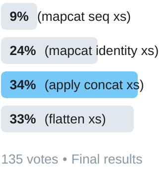

apply concat and friends
The other day at work, writing a function, I typed mapcat
seq...
| Me: | Hey, are you familiar with this? |
| Pairing partner: | Nope |
| Me: | Ah, well (mapcat seq xs) is just like (apply concat xs) |
| Pairing partner: | Oh, so why not just use (apply concat xs)? |
| Me: | ... |
The first I heard of mapcat seq was when Christophe Grand
mentioned it some years ago. I'm not sure what he found pleasant about it, but
I love that it's shorter than apply concat (by two
characters!) and I've used it ever since.
Just realized that (mapcat seq x) is a pleasant alternative to (apply concat x). #clojure
— Christophe Grand (@cgrand) September 6, 2012

mapcat seq – A close cousin to mapcat identity,
and my favorite for the last several years.
Two characters is of course a silly reason to choose one over the other, in all but the most 4clojure of circumstances. But they are very similar and there are other alternatives, so which is best? I decided to carefully study this question by conducting a rigorously controlled and scientific Twitter poll. Twenty-four hours later I had my answer:
Just because they do different things doesn't mean you can't have a favorite.
— Chouser (@chrishouser) April 18, 2019

I wasn't really expecting everyone to pick my favorite. More respondents
liked apply concat, and I can live with that. Maybe I should
conform for the sake of community. But what I can't abide is that it only barely
beat out flatten! Unacceptable! I had no choice to but to
immediately dawdle, procrastinate, and finally five months later write a blog
post about it.
The infamous flatten
The other three options in the poll are indeed very similar. In fact their
differences are so subtle, I really doubt you will ever regret whichever one use
choose to use. I dare not, however, make this same prediction about
flatten, for I fear if you use it in innocence it will betray
you.
To explain why, let's first look at an example for which all four expressions return the same value:
(flatten [[1 2 3] [4 5 6] [7 8 9]]) ;=> (1 2 3 4 5 6 7 8 9)
When you reach for any of these expressions, this is usually what you're
thinking of: take a sequence of sequences and stitch them together into a single
sequence. And flatten indeed does this, but it does a lot more.
Let's examine its definition:
(defn flatten
"Takes any nested combination of sequential things (lists, vectors,
etc.) and returns their contents as a single, flat lazy sequence.
(flatten nil) returns an empty sequence."
{:added "1.2"
:static true}
[x]
(filter (complement sequential?)
(rest (tree-seq sequential? seq x))))
flatten – Looks surprised. You will be too.
First, note the use of tree-seq, an amazingly powerful little
function that can return a lazy sequence of a depth-first walk of any kind of
tree. Its use (and the mention of "nested" in the docstring) suggest
flatten is treating its input as a tree, not just a sequence of
sequences. So whereas apply concat and mapcat seq
assume their input is a sequence of seqables and stop there,
flatten examines each element and may choose to descend deeper into
the input, examining as it goes.
Second, note that it uses sequential?, an infrequently used
predicate in my experience, to choose when to descend. Would it surprise you to
learn that persistent queues are sequential?, but strings, sets,
and arrays are not? How confident are you that future maintainers of your code
know this?
With this knowledge we can construct a couple examples where
flatten behaves differently from the alternatives in the poll.
| input | flatten |
apply concat and others |
|---|---|---|
[[1 2 3] 4 [5 6]] |
(1 2 3 4 5 6) |
error |
[[1 [2 3]] [4 5 6]] |
(1 2 3 4 5 6) |
(1 [2 3] 4 5 6) |
[[1 2 3] #{4 5 6}] |
(1 2 3 #{4 6 5}) |
(1 2 3 4 6 5) |
So beware, flatten is different and more complicated than the
alternatives. Only rarely do I have multiple levels of nested sequences that I
want to flatten, where sequential? correctly defines when I want
it to descend. I'm not alone in warning about its use. Others have mentioned it,
and Eric Normand wrote up a nice
example of how it can betray you.
Now if we've ruled out flatten for most common use cases, what
shall we use instead?
Enumerating alternatives
I didn't put a lot of thought into the choices to give in the Twitter poll,
so if we want to find the best alternative, perhaps a more rigorous approach to
finding alternatives is warranted. There are a couple projects to help find all
Clojure functions that behave in a particular way: Michiel Borkent's somewhat
confusingly named re-find
which leverages the declared specs of functions (via core.spec) to
find matches, and Anthony Grimes's findfn which tries calling all the
functions and macros in a namespace to see which produces the desired results.
Neither quite meets our requirements here because besides finding
single-function solutions like flatten, we also want higher-order
solutions like apply concat.
So I wrote a function to specifically look for expressions of the form
(f1 f2 xs) for any f1 and f2 that return the same
value as (mapcat seq xs).
(defn find-phrases []
(let [xs [[1 2 3] [4 5 6] [7 8 9]]
goal (mapcat seq xs)
vars (vals (ns-publics 'clojure.core))]
(doall
(for [v0 vars
v1 vars
:when (try
(= goal (@v0 @v1 xs))
(catch Throwable t false))]
(list v0 v1 'xs)))))
I don't recommend you run this since it freezes, crashes, and breaks in
various ways. You may be surprised to find that some combinations of core
functions are not well-behaved. But it almost works: vars is a
sequence of all public vars in clojure.core, the for
builds all pairs, and the :when clause tries the pair and compares
against our goal.
mapcat identity – A close cousin to mapcat
seq, but lazier.
All that's left is to make it not fall apart, so I added a try/catch around
the scary test invocation. This wasn't enough, so I also manually excluded
several functions and a couple of combinations that caused problems and won't
meet the goal. This
version runs to completion in about 11 seconds and finds 44 equivalent
function combinations for the tested input. Most of these use
mapcat, since it turns out there are lots of functions that act
like identity in limited circumstances, for example mapcat
sort. But there are a few others, that look interesting: reduce
into, sequence cat, and eduction cat.
The eagerness of reduce into
reduce into – This cat has been reduced.
Most of the options mentioned above produce lazy sequences and are more or
less lazy themselves, but not reduce into. When reduce
is called without an init value it uses the first collection element
instead, and since into eagerly pours its second argument into its
first, the return value of reduce into is both fully eager and very
dependant on the type of the first collection element.
The examples in the table below demonstrate that while providing a initial vector will result in value similar to other alternatives (though as a vector instead of a sequence), with an initial list the remaining elements will be reversed, and with an initial set the resulting collection is a set instead of a sequence with a few elements in indeterminate order.
| input | reduce into |
apply concat |
|---|---|---|
[ [1 2 3] [4 5 6]] |
[1 2 3 4 5 6] |
(1 2 3 4 5 6) |
['(1 2 3) [4 5 6]] |
(6 5 4 1 2 3) |
(1 2 3 4 5 6) |
[#{1 2 3} [4 5 6]] |
#{1 4 6 3 2 5} |
(1 3 2 4 5 6) |
So that's reduce into. The other interesting combinations found both use cat.
The eduction and sequence of cat
sequence cat – Looks like a sequence of cats, but is actually a concatenation of sequences.
I wasn't familiar with the function cat until
find-phrases found it. Its docstring says it is a transducer
which concatenates the contents of each input, which must be a collection, into
the reduction.. The concatenation sounds exactly like what we need, so then
it's just a matter of finding something to collect the transducer into a
sequence. I would normally just (into [] cat xs), but apparently if
I was more familiar with the transducer-related functions, I would have known
about eduction and sequence. Judging by their
docstrings, a key difference between them is that sequence can take
multiple collections and up to one transducer whereas eduction can
take multiple transducers and one collection. But since we only have one of
each, either (eduction cat xs) or (sequence cat xs)
will work.
Several of the apply concat alternatives we've found are so
far indistinguishable from each other. Although flatten and
reduce into behave differently, the rest return apparently
identical lazy sequences, so how shall we decide which to use? One obvious
metric would be speed, but micro-benchmarks are difficult and of questionable
value. So why don't we look at something a bit more concrete: laziness.
Tools for exploring laziness
The laziness of a sequence is usually a bit tricky to observe. The easiest
approach is through side effects triggered as the sequence is realized, for
example (map prn [1 2 3]) which returns a sequence of
nils but prints each number as it is forced. This is sometimes
sufficient, but the input sequences we're dealing with here are nested, which
would print confusingly intermingled elements, so let's build a couple of tools
to make laziness easier to see.
Clojure's built-in printer (the P in REPL) forces lazy seqs.
But since the REPL printer, as well as prn and pr-str,
delegate to the print-method multimethod, we can replace the
implementation for ISeq with one that doesn't force lazy seqs. This
is the first tool we'll need.
(def ^:dynamic *hold-the-lazy* false)
(defn write-lazy-seq [space? coll w]
(if (and *hold-the-lazy*
(instance? clojure.lang.IPending coll)
(not (realized? coll)))
(.write w (str (when space? " ") "..."))
(when (seq coll)
(when space?
(.write w " "))
(.write w (pr-str (first coll)))
(write-lazy-seq true (rest coll) w))))
(defmethod print-method clojure.lang.ISeq [coll w]
(.write w "(")
(write-lazy-seq false coll w)
(.write w ")"))
By default, lazy seqs will print the same as usual:
(let [xs (map inc (range 10))] (prn xs))
(1 2 3 4 5 6 7 8 9 10)
But by binding *hold-the-lazy* while printing, we can now see
where there are unrealized values:
(let [xs (map inc (range 50))]
(binding [*hold-the-lazy* true]
(prn xs)))
(...)
Or we can rebind the root value to change the default behavior:
(alter-var-root #'chouser.mapcatseq/*hold-the-lazy* (constantly true)) (map inc (range 50))
(...)
Calling first on the sequence forces the map
function consume some of the range in order to compute the first
inc. But how much computation does it actually do?
(let [xs (map inc (range 50))] (first xs) xs)
(1 2 3 4 5 6 7 8 9 10 11 12 13 14 15 16 17 18 19 20 21 22 23 24 25 26 27 28 29 30 31 32 ...)
Note that the realization of the values is a side-effect of calling
(first xs), which is why we can discard that expression's return
value and instead print the original xs sequence afterward.
Another detail to notice is that when map is asked to compute
the first value, it actually computes the first 32 values, a feature called
chunking that is meant to amortize the overhead of creating the new lazy
sequence. But if we want to understand precisely how lazy our various
expressions are, we're going to need something that doesn't chunk. Fortunately,
section 15.3.1 of Joy of Clojure has just the function we need:
(defn seq1 [s]
(lazy-seq
(when-let [[x] (seq s)]
(cons x (seq1 (rest s))))))
This takes any seqable collection and returns an unchunked lazy seq of it:
(let [xs (seq1 (range 50))] (first xs) xs)
(0 ...)
This time, calling first only forces the first element, so only
0 is printed before the ellipses.
With these tool in our belt, we're ready to see what just how lazy our various flatteners are.
Multidimensional laziness
Most valid inputs to apply concat and friends are themselves at
least two-dimensional. For example, here is valid input sequence of length four
(the first dimension), each element of which is a sequence of length three (the
second dimension), using seq1 to make it fully lazy:
(seq1 [(seq1 [1 2 3])
(seq1 [4 5 6])
(seq1 [7 8 9])
(seq1 [10 11 12])])
Using the lazy printer, we can pass this collection to each of expressions we've been examining to see how much of this input is forced by merely evaluating the expression, without forcing any part of the returned lazy sequence. This is enough to start seeing some differenced between these expressions:
| forced | ((1 2 3) (4 5 6) (7 8 9) (10 11 12)) |
| flatten | ((...) (...) (...) (...) ...) |
| apply concat | ((...) (...) (...) (...) ...) |
| mapcat identity | ((...) (...) (...) (...) ...) |
| mapcat seq | ((1 ...) (4 ...) (7 ...) (10 ...) ...) |
| reduce into | ((1 ...) (4 5 6) (7 8 9) (10 11 12)) |
| sequence cat | ((1 2 3) ...) |
| eduction cat | (...) |
Here we can see that eduction cat is the laziest of these,
apparently not even examining its argument. Unsurprisingly, mapcat
identity and mapcat seq are similar, realizing the first 4
elements of the outer sequence, differing only in that seq realizes
the first element of each of those (the 1, 4, 7, and 10). However it's
interesting to note those four realized top-level elements are shared with
apply concat as well as flatten. So what do these have
in common?
To answer this, let's peek at the implementation of mapcat:
(defn mapcat
;; ... elided for clarity ...
([f & colls]
(apply concat (apply map f colls))))
When I first noticed this, I was a bit stunned. My favorite contender,
mapcat seq, is built on the poll winner, apply concat.
...and of course that's why their laziness profile is similar. So what about
flatten, why does it fit the same pattern? We looked at it earlier,
and it doesn't use apply. It does, however, call tree-seq:
(defn tree-seq
;; ... elided for clarity ...
[branch? children root]
(let [walk (fn walk [node]
(lazy-seq
(cons node
(when (branch? node)
(mapcat walk (children node))))))]
(walk root)))
apply concat – Winner of the Twitter poll. Somewhat lazy. Somewhat smug.
And there it is, a use of mapcat which in turn calls apply
concat and gives us our four realized elements of the top-level
collection. It turns out apply concat is much more fundamental than
I realized. My allegiance to mapcat seq is wavering.
So now we've seen how of the input is forced by an expression when it is
first evaluated, but another dimension to examine is time. That is, what
happens when we start to realize parts of the return value of the
expressions in question. Here's a chart using the same input collection, but
showing the state of its laziness after calling first on the
result:
| forced | ((1 2 3) (4 5 6) (7 8 9) (10 11 12)) | |
| flatten | ((1 2 3) (...) (...) (...) ...) | |
| apply concat | ((1 ...) (...) (...) (...) ...) | |
| mapcat identity | ((1 ...) (...) (...) (...) ...) | |
|
mapcat seq | ((1 ...) (4 ...) (7 ...) (10 ...) ...) |
| reduce into | ((1 ...) (4 5 6) (7 8 9) (10 11 12)) | |
| sequence cat | ((1 2 3) (4 5 6) (7 8 9) (10 11 12)) | |
| eduction cat | ((1 2 3) (4 5 6) (7 8 9) (10 11 12)) |
Now we can see in sequence cat and eduction cat
the eagerness common in transducers; once forced to do some work, they do all of it. The apply concat-based expressions stay relatively lazy, though we can see in the seq in mapcat seq forcing the first element of each sub-collection.
Answering the question
In an attempt to answer my pairing partner's straightforward question, I
learned several things: I learned flatten is more popular than it
should be. I learned eduction and sequence are handy
for applying transformers. And I learned that not only is apply
concat more popular than mapcat seq, it is also more
fundamental.
| Pairing partner: | Oh, so why not just use (apply concat xs)? |
| Me: | ... uh, no good reason. |
Updates, 25 Sept 2019:
- Mark Engelberg warns
about trusting the laziness of
apply concatandmapcat, and suggests the use ofmedley.core/joininstead. - Paul
Stadig sometimes likes
(for [ys xs y ys] y), a solution I completely missed and which, depending on how you count, could also shorter thanapply concat. - Stuart Sierra has some thoughts. It's like a little blogosphere!
- Also, I fixed a bunch of typos, spelling errors, and the publish date.
Updates, 26 Sept 2019: